| 전로의 사용전압 [V] | DC 시험전압 [V] | 절연저항 [MΩ] |
|---|---|---|
| SELV 및 PELV | ① | ② |
| FELV, 500 [V] 이하 | ③ | ④ |
| 500 [V] 초과 | ⑤ | ⑥ |
정답
정답
① 250, ② 0.5, ③ 500, ④ 1.0, ⑤ 1,000, ⑥ 1.0
부분점수
| 점수 | 세부기준 |
|---|---|
| 6~0점 | 소문항 총 6개 중 정답 1개마다 1점씩 획득 |
접근 POINT
전기설비기술기준 제52조 저압전로의 절연성능 규정에서 전로의 사용전압별 DC시험전압과 절연저항을 묻는 문제로 규정을 암기하여 표의 빈칸을 채우는 문제이다.
해설
전기설비기술기준 제52조 (저압전로의 절연성능)
전기사용 장소의 사용전압이 저압인 전로의 전선 상호간 및 전로와 대지 사이의 절연저항은 개폐기 또는 과전류차단기로 구분할 수 있는 전로마다 다음 표에서 정한 값 이상이어야 한다. 다만, 전선 상호간의 절연저항은 기계기구를 쉽게 분리가 곤란한 분기회로의 경우 기기 접속 전에 측정할 수 있다. 또한, 측정 시 영향을 주거나 손상을 받을 수 있는 SPD 또는 기타 기기 등은 측정 전에 분리시켜야 하고, 부득이하게 분리가 어려운 경우에는 시험전압을 250V DC로 낮추어 측정할 수 있지만 절연저항 값은 1MΩ 이상이어야 한다.
| 전로의 사용전압 [V] | DC시험전압 [V] | 절연저항 [MΩ] |
|---|---|---|
| SELV 및 PELV | 250 | 0.5 |
| FELV, 500V 이하 | 500 | 1.0 |
| 500V 초과 | 1,000 | 1.0 |
[주] 특별저압(extra low voltage: 2차 전압이 AC 50V, DC 120V 이하)으로 SELV(비접지회로 구성) 및 PELV(접지회로 구성)은 1차와 2차가 전기적으로 절연된 회로, FELV는 1차와 2차가 전기적으로 절연되지 않은 회로
정답
정답
해설) 단답 암기형 / 난이도 下
색온도
연색성
| 점수 | 세부기준 |
|---|---|
| 4점 | (1), (2)번이 모두 맞는 경우 4점 획득 |
| 2점 | (1), (2)번 중 1문항만 맞는 경우 2점 획득 |
조명에서 색온도와 연색성에 대한 정의가 어떻게 되는지를 묻는 단답 암기형 문제이다.
일반적으로 온도가 낮은 물체에서 방사하는 빛은 붉고, 온도가 높아질수록 흰색으로, 더욱 온도가 높아질수록 푸른색을 띠게 된다.
여기서 온도가 높은 순서는 “색온도 > 진온도 > 휘도온도 > 복사온도”이다.
물체는 분광분포가 다른 광원을 비추면 각각 다른 색으로 보이는데, 조명에 의한 물체의 색깔을 결정하는 광원의 성질을 연색성이라 한다.
여기서 연색성이 우수한 순서는 “크세논등 > 백색 형광등 > 형광 수은등 > 나트륨등”이다.
| 번호 | 방법 | 종류 |
|---|---|---|
| ① | Megger법 | 절연 측정법 |
| ② | Tan δ 측정법 | 사고점 측정법 |
| ③ | 부분 방전 측정법 | 절연 측정법 |
| ④ | Murray Loop법 | 사고점 측정법 |
| ⑤ | Capacity Bridge법 | 절연 측정법 |
| ⑥ | Pulse Rader법 | 사고점 측정법 |
정답 ②, ④, ⑥
정답 ①, ③, ⑤
해설) 단답 암기형 / 난이도 下
사고점 측정법: ④, ⑤, ⑥
절연 측정법: ①, ②, ③
| 점수 | 세부기준 |
|---|---|
| 4점 | (1), (2)번이 모두 맞은 경우 4점 획득 |
| 2점 | (1), (2)번 중 하나만 맞은 경우 2점 획득 |
| 설비의 유형 | 조명 [%] | 기타 [%] |
|---|---|---|
| A: 저압으로 수전하는 경우 | ① | ② |
| B: 고압 이상으로 수전하는 경우* | ③ | ④ |
정답
①
②
③
④
정답
(해설) 단답 암기형 / 난이도 중
① 3, ② 5, ③ 6, ④ 8
표보다 큰 전압강하를 허용할 수 있는 경우
① 기동 시간 중의 전동기
② 돌입 전류가 큰 기타 기기
| 점수 | 세부기준 |
|---|---|
| 6점 | (1), (2)번이 모두 맞은 경우 6점 획득 |
| 6~0점 | (1), (2)번 소문항 6문항 중 1개가 맞을 때마다 1점씩 획득 |
[KEC 232.3.5 수용가 설비에서의 전압강하]
수용가 설비의 인입구로부터 기기까지의 전압강하는 다음에 제시한 표의 값 이하여야 한다.
| 설비의 유형 | 조명[%] | 기타[%] |
|---|---|---|
| A-저압으로 수전하는 경우 | 3 | 5 |
| B-고압 이상으로 수전하는 경우* | 6 | 8 |
가능한 한 최종회로 내의 전압강하가 A유형의 값을 넘지 않도록 하는 것이 바람직하다.
사용자의 배선설비가 100[m]를 넘는 부분의 전압강하는 미터 당 0.005[%] 증가할 수 있으나 이러한 증가분은 0.5[%]를 넘지 않아야 한다.
다음의 경우에는 표보다 더 큰 전압강하를 허용할 수 있다.
정답
①
②
③
정답
부분점수
| 점수 | 세부기준 |
|---|---|
| 5점 | ①~③번이 모두 맞은 경우 5점 획득 |
| 3점 | ①~③번 중 2개가 맞은 경우 3점 획득 |
| 1점 | ①~③번 중 1개가 맞은 경우 1점 획득 |
해설
접지저항에는 다음 3종류의 저항이 포함된다.
(1) A와 B를 같이 ON하거나 C를 ON할 때 X_1이 출력되는 경우
① 유접점 회로를 그리시오.
정답
② 무접점 회로를 그리시오.
정답
(2) A를 ON하고 B 또는 C를 ON할 때 X_2이 출력되는 경우
① 유접점 회로를 그리시오.
정답
② 무접점 회로를 그리시오.
정답
① 유접점 회로
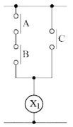
② 무접점 회로
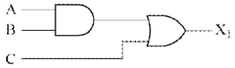
① 유접점 회로
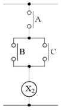
② 무접점 회로
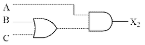
| 점수 | 세부기준 |
|---|---|
| 6점 | (1), (2)번이 모두 맞은 경우 6점 획득 |
| 3점 | (1), (2)번 중 하나만 맞은 경우 3점 획득 |
(A AND B를 ON) OR (C를 ON) 과 같습니다. 따라서 논리식은
다음과 같습니다.
\[ (AB) + C = X_1 \]
(A를 ON) AND (B OR C를 ON) 과 같습니다. 따라서 논리식은
다음과 같습니다.
\[ A(B+C) = X_2 \]
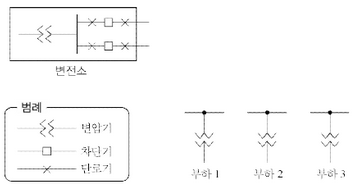
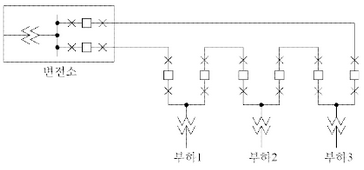
| 점수 | 세부기준 |
|---|---|
| 4점 | 단선도를 정확하게 그린 경우 4점 획득 |
| 0점 | 단선도에 오류가 있는 경우 0점 |
루프 배선의 이점은 선로의 도중에 고장 발생 시, 고장개소의 분리조작이 용이하여 그 부분을 빨리 분리시킬 수 있고 전류의 통로에 융통성이 있으므로 전력 손실과 전압강하가 적다.
[계산과정]
정답
[계산과정]
\[ \eta = \frac{\sqrt{3}V_2I_2\cos\theta_2}{\sqrt{3}V_2I_2\cos\theta_2 + 2P_i + 2m^2P_c} \times 100 \]
\[ = \frac{\sqrt{3 \times 10 \times 0.5}}{(\sqrt{3 \times 10 \times 0.5}) + (2 \times 0.12) + (2 \times 1^2 \times 0.2)} \times 100 \approx 93.12 [\%] \]
정답 93.12 [%]
| 점수 | 세부기준 |
|---|---|
| 5점 | 계산과정과 정답이 모두 맞은 경우 5점 획득 |
| 0점 | 계산과정이나 정답에 오류가 있는 경우 0점 |
단상 변압기 2대를 V결선하였으므로, 철손과 동손은 1대 분량의 2배를 하여야 한다.
\[ \eta = \frac{\text{출력}}{\text{출력 + 손실}} \times 100 = \frac{\sqrt{3}P_o\cos\theta}{\sqrt{3}P_a\cos\theta + 2P_i + 2m^2P_c} \times 100 [%] \]
[계산과정]
측정 전압: 103 V 보정율: -0.8%
보정된 전압은 다음과 같이 계산할 수 있습니다.
\[ V*{보정} = V*{측정} \times (1 + 보정율) \]
\[ V\_{보정} = 103 \times (1 - 0.008) = 103 \times 0.992 = 102.176 V \]
따라서 보정된 회로의 전압은 102.176 V 입니다.
정답 102.176 V
해설) 단순 계산형 / 난이도 下
정답
[계산과정]
\[ \% 보정 = \frac{보정값}{측정값} \times 100 = \frac{참값 - 측정값}{측정값} \times 100 = \frac{103 - 103}{103} \times 100 = -0.8 \]
\[ \therefore 참값 = \frac{-0.8}{100} \times 103 + 103 = 102.18 [V] \]
정답 102.18[V]
부분점수
| 점수 | 세부기준 |
|---|---|
| 5점 | 계산과정과 정답이 모두 맞은 경우 5점 획득 |
| 0점 | 계산과정이나 정답에 오류가 있는 경우 0점 |
해설
① 오차 = 측정값 - 참값
\[ ② 오차율 = \frac{오차}{참값} \times 100 = \frac{측정값 - 참값}{참값} \times 100 [%] \]
③ 보정값 = 참값 - 측정값
\[ ④ 보정률 = \frac{보정값}{측정값} \times 100 = \frac{참값 - 측정값}{측정값} \times 100 [%] \]
[계산과정]
정답
해설) 단순 계산형 / 난이도 중
정답
[계산과정]
\[ 광도 I = R \times \frac{r^2}{\tau} \times (1 - \rho) = \frac{2000 \times \left( \frac{10 \times 10^{-2}}{2} \right) \times (1 - 0)}{0.9} \approx 22.22 [cd] \]
정답 22.22 [cd]
부분점수
| 점수 | 세부기준 |
|---|---|
| 5점 | 계산과정과 정답이 모두 맞은 경우 5점 획득 |
| 0점 | 계산과정이나 정답에 오류가 있는 경우 0점 |
해설
\[ 반지름은 r = \frac{d}{2} [m] 이고, \]
\[ 광속발산도 R = \tau \cdot \frac{I}{r^2} 또는 R = \frac{F}{S} \times \eta = \frac{4\pi r^2}{4\pi r^2} \times \frac{\tau}{1 - \rho} = \frac{I}{r^2} \times \frac{\tau}{1 - \rho} [rlx] \]
\[ 광도는 I = R \times \frac{r^2}{\tau} [cd] 이고, 투과면에서의 광속발산도 R = \tau E = \tau \cdot \frac{I}{r^2} [rlx] \]
\[ (여기서, r: 구의 반지름, I: 광도(완전 확산성 구형 글로브 중심의 점광원), \eta: 글로브 효율, \tau: 투과율, \rho: 반사율이다.) \]
[계산과정]
정답
해설) 단순 계산형 / 난이도 下
정답
[계산과정]
\[ 전열기의 용량 P = \frac{mCT}{860 \cdot t \cdot \eta} [kW] \]
\[ 전열기의 효율 \eta = \frac{mC(T_2 - T_1)}{860 \cdot t \cdot P} = \frac{4 \times 1 \times (90 - 15)}{860 \times \frac{25}{60} \times \frac{1}{2}} = 0.8372 = 83.72 [%] \]
정답 83.72[%]
부분점수
| 점수 | 세부기준 |
|---|---|
| 5점 | 계산과정과 정답이 모두 맞은 경우 5점 획득 |
| 0점 | 계산과정이나 정답에 오류가 있는 경우 0점 |
해설
P = \(\frac{mCT}{860 \cdot t \cdot \eta}\) [kW]
m: 질량 [kg], C: 비열[kcal/kg \(\cdot\) °C], T: 온도차[°C]
t: 시간[hour], \(\eta\): 전열기의 효율[%]
[계산과정]
정답
()
해설) 단순 계산형 / 난이도 중
[계산 과정]
중성선에 흐르는 전류
\[ I_n = I_a + I_b + I_c = 10\angle0^\circ + 8\angle-120^\circ + 9\angle-240^\circ = \sqrt{3}\angle30^\circ \]
\[ **[정답]** \sqrt{3} [A] 또는 1.73 [A] \]
부분 점수
| 점수 | 세부 기준 |
|---|---|
| 5점 | 계산 과정과 정답이 모두 맞는 경우 5점 획득 |
| 0점 | 계산 과정이나 정답에 오류가 있는 경우 0점 |
접근 POINT
3상 4선식 중성선에 흐르는 전류는 3상 전류의 전류 합(벡터합)이다. 만약 3상이 대칭이면 중성선에 흐르는 전류는 ’0’이 되고, 불평형 또는 고장 시에는 중성선에는 전류가 흐르게 되어 통신선 유도 장해 등이 나타나게 된다.
해설
3상 4선식에서 중성선에 흐르는 전류: 각 상 전류의 합
\[ I_n = I_a + I_b + I_c 각 상 전류 = 기본파 + 제3고조파(영상분) \]
중성선에 흐르는 전류 = 각 상 불평형에 의한 전류 + 각 상에 포함된 고조파 전류(기본파는 3상 대칭으로 상쇄됨)
제3고조파 전류는 중성선에 3배 크기로 확대되어 나타남 → 통신선 유도 장해, 중성선 과열
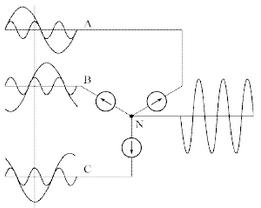
계산 과정에서 C상 전류 \(9\angle-240^\circ\)를 \(9\angle120^\circ\)로 바꿔서 계산해도 된다.
[계산과정]
정답
[계산과정]
정답
해설) 복합 계산형 / 난이도 상
[계산과정]
상전압 \(V_ρ\)에는 기본파와 제3고조파 전압만 존재하므로
\[ V_ρ = \sqrt{V_1^2 + V_3^2}, 150 = \sqrt{V_1^2 + V_3^2} ① \]
선간전압 \(V_L\)에는 제3고조파분이 존재하지 않으므로
\[ V_L = \sqrt{3}V_1, 220 = \sqrt{3}V_1 ② \]
식 ①, ②에서
\[ V_1 = \frac{220}{\sqrt{3}} = 127.02 [V] \]
\[ \therefore V_3 = \sqrt{150^2 - V_1^2} = \sqrt{150^2 - 127.02^2} = 79.79 [V] \]
정답 79.79 [V]
[계산과정]
\[ 왜형률 = \frac{\text{제3고조파 실효값}}{\text{기본파 실효값}} \times 100 = \frac{V_3}{V_1} \times 100 = \frac{79.79}{127.02} \times 100 = 62.82 [\%] \]
정답 62.82 [%]
부분점수
| 점수 | 세부기준 |
|---|---|
| 5점 | (1), (2)번이 모두 맞은 경우 5점 획득 |
| 3점 | (1)번만 맞은 경우 3점 획득 |
| 2점 | (2)번만 맞은 경우 2점 획득 |
해설
제3고조파 전압을 구한 후 그 값을 이용하여 전압의 왜형률을 계산한다.
\[ 상전압과 고조파의 관계식 V_ρ = \sqrt{V_1^2 + V_3^2} \]
\[ 왜형률 = \frac{\text{제3고조파 실효값}}{\text{기본파 실효값}} \times 100 [\%] \]
[배점: 8점]
(1) 1[km]당 인덕턴스 L [H/km]와 정전용량 C [F/km]을 계산하시오.
[계산과정]
정답
(2) 파장 [m]을 계산하시오.
[계산과정]
정답
[계산과정]
정답
해설) 복합 계산형 / 난이도 上
[계산과정]
전파속도 \(v = \frac{1}{\sqrt{LC}}\) 이고, 특성임피던스 \(Z_0 = \sqrt{\frac{L}{C}}\) 이므로
인덕턴스 \(L = \frac{Z_0}{v} = \frac{600}{3 \times 10^5} = 2 \times 10^{-3}\) [H/km]
정전용량 $C = = = 5.55 ^{-9} $[F/km]
정답 \(L = 2 \times 10^{-3}\) [H/km], \(C = 5.55 \times 10^{-9}\) [F/km]
[계산과정]
\[ v = f\lambda \rightarrow \lambda = \frac{v}{f} = \frac{300000 \times 10^3}{60} = 5 \times 10^6 \text{ [m]} \]
정답 $5 ^6 $ [m]
[계산과정]
$Z_l = Z_0 \(일 때 반사계수\) = = 0 $이므로 송전단에서 본 임피던스는 \(Z_0\) 와 같다.
정답 600 [Ω]
부분점수
| 점수 | 세부기준 |
|---|---|
| 8점 | (1), (2), (3)번이 모두 맞은 경우 8점 획득 |
| 4점 | (1)번만 맞은 경우 4점 획득 |
| 2점 | (2), (3)번은 한 문제가 맞을 때마다 2점 획득 |
해설
무손실 선로에서의 특성 임피던스 계산
\[ Z*0 = \sqrt{\frac{L}{C}} = 138 \log*{10} \frac{D}{r} = 600 \text{ [Ω]} \]
\[ \log\_{10} \frac{D}{r} = \frac{600}{138} \]
인덕턴스
\[ L = 0.05 + 0.4605 \log\_{10} \frac{D}{r} = 0.05 + 0.4605 \times \frac{600}{138} = 2.05 \text{ [mH/km]} = 2.05 \times 10^{-3} \text{ [H/km]} \]
커패시터
\[ C = \frac{0.02413}{\log\_{10} \frac{D}{r}} = \frac{0.02413}{\frac{600}{138}} = 5.55 \times 10^{-3} \text{ [µF/km]} = 5.55 \times 10^{-9} \text{ [F/km]} \]
특성임피던스
\[ Z_0 = \sqrt{\frac{Z}{Y}} = \sqrt{\frac{r + j\omega L}{g + j\omega C}} \]
무손실 선로인 경우 r = g = 0 이므로
\[ Z*0 = \sqrt{\frac{L}{C}} = \sqrt{\frac{0.4605 \log*{10} \frac{D}{r} \times 10^{-3}}{0.02413 \times 10^{-6}}} = 138 \log\_{10} \frac{D}{r} \text{ [Ω]} \]
인덕턴스와 정전용량
\[ 인덕턴스 L = 0.05 + 0.4605 \log*{10} \frac{D}{r} \approx 0.4605 \log*{10} \frac{D}{r} = 0.4605 \times \frac{Z_0}{138} \text{ [mH/km]} \]
\[ 정전용량 C = \frac{0.02413}{\log\_{10} \frac{D}{r}} = \frac{0.02413}{\frac{Z_0}{138}} \text{ [µF/km]} \]
[계산과정]
[계산과정]
[계산과정]
[계산과정]
\[ 부하 용량 P_1 = 520 = \sqrt{3}V_r I \cos\theta_1, P_2 = 600 = \sqrt{3}V_r I \cos\theta_2 \]
수전단 전압(\(V_r\)) 및 선로전류(I)는 일정하다.
\[ V_r I = \frac{P_1}{\sqrt{3}\cos\theta_1} = \frac{P_2}{\sqrt{3}\cos\theta_2} 에서 \cos\theta_2 = \frac{P_2}{P_1}\cos\theta_1 = \frac{600}{520} \times 0.8 = 0.92 \]
커패시터의 용량
\[ Q_c = P_2(\tan\theta_1 - \tan\theta_2) = 600 \times \left( \frac{0.6}{0.8} - \frac{\sqrt{1 - 0.92^2}}{0.92} \right) = 194.40[kVA] \]
정답 194.40 [kVA]
[계산과정]
\[ V\_{s1} = V_r + \frac{P_1}{V_r}(R + X\tan\theta_1) \]
\[ = 3000 + \frac{520 \times 10^3}{3000} (1.78 + 1.17 \times \frac{0.6}{0.8}) = 3460.64[V] \]
\[ \because 520[kW] = 520 \times 10^3[W] \]
정답 3460.63 [V]
[계산과정]
\[ V\_{s2} = V_r + \frac{P_2}{V_r}(R + X\tan\theta_2) \]
\[ = 3000 + \frac{600 \times 10^3}{3000} (1.78 + 1.17 \times \frac{\sqrt{1 - 0.92^2}}{0.92}) = 3455.68[V] \]
\[ \because 520[kW] = 520 \times 10^3[W] \]
정답 3455.68 [V]
부분점수
| 점수 | 세부기준 |
|---|---|
| 9점 | (1), (2), (3)번이 모두 맞은 경우 9점 획득 |
| 3점 | (1), (2), (3)번 중 하나 맞을 때마다 3점씩 획득 |
해설
아래 관계식을 적용하여 차례대로 풀이한다.
부하 용량 $P = V_r I V_r I = $
전력용 콘덴서 용량 $Q_c = P(_1 - _2) $
송전단 전압 $V_s = V_r + (R + X) $
표 1. 등급별 추정 전원 용량 [VA/m²]
| 내용 | 0등급 | 1등급 | 2등급 | 3등급 |
|---|---|---|---|---|
| 조명 | 32 | 22 | 22 | 29 |
| 콘센트 | - | 13 | 5 | 5 |
| 사무자동화 기기 | - | - | 34 | 36 |
| 일반 동력 | 38 | 45 | 45 | 45 |
| 냉방 동력 | 40 | 43 | 43 | 43 |
| 사무자동화 동력 | - | 2 | 8 | 8 |
| 합계 | 110 | 125 | 157 | 166 |
연면적 10,000 [m²]인 인텔리전트 2등급 사무실 빌딩의 전력설비 용량을 표 1을 이용하여 계산하시오.
(1)에서 조명, 콘센트, 사무자동화 기기의 적정 수용률은 0.7, 일반 동력 및 사무자동화 동력의 적정 수용률은 0.5, 냉방 동력의 적정 수용률은 0.8이고, 주변압기 부등률은 1.2로 적용한다. 2단 강압방식으로 채택할 경우 변압기의 용량에 따른 변전설비의 용량을 계산하시오. (단, 조명, 콘센트, 사무자동화 기기를 3상 변압기 1대로, 일반 동력 및 사무자동화 동력을 3상 변압기 1대로, 냉방 동력을 3상 변압기 1대로 구성하고 상기 부하에 대한 주변압기를 1대 사용하도록 하며, 변압기 용량은 다음 표에서 정한다.)
표 2. 3상 변압기 용량표 [kVA]
| 75 | 100 | 150 | 200 | 250 | 300 | 400 | 500 | 750 | 1,000 |
|---|
| 부하내용 | 면적을 적용한 부하용량 [kVA] |
|---|---|
| 조명 |
계산:
\(22 \times 10,000 \times 10^{-3} = 220\)[kVA] 답: 220[kVA] |
| 콘센트 |
계산:
\(5 \times 10,000 \times 10^{-3} = 50\)[kVA] 답: 50[kVA] |
| 사무자동화 기기 |
계산:
\(34 \times 10,000 \times 10^{-3} = 340\)[kVA] 답: 340[kVA] |
| 일반동력 |
계산:
\(45 \times 10,000 \times 10^{-3} = 450\)[kVA] 답: 450[kVA] |
| 냉방동력 |
계산:
\(43 \times 10,000 \times 10^{-3} = 430\)[kVA] 답: 430[kVA] |
| 사무자동화 동력 |
계산:
\(8 \times 10,000 \times 10^{-3} = 80\)[kVA] 답: 80[kVA] |
| 합계 |
계산:
\(157 \times 10,000 \times 10^{-3} = 1,570\)[kVA] 답: 1,570[kVA] |
① 조명, 콘센트, 사무자동화 기기
[계산과정] \[ Tr_1 = (220 + 50 + 340) \times 0.7 = 427 [kVA] \] 정답 500[kVA] 선정
② 일반동력, 사무자동화 동력
[계산과정] \[ Tr_2 = (450 + 80) \times 0.5 = 265 [kVA] \] 정답 300[kVA] 선정
③ 냉방동력
[계산과정] \[ Tr_3 = 430 \times 0.8 = 344 [kVA] \] 정답 400[kVA] 선정
④ 주변압기 용량
[계산과정] \[ \frac{427 + 265 + 344}{1.2} = 863.333 [kVA] \] 정답 1,000[kVA] 선정
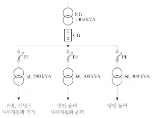
부분점수
| 점수 | 세부기준 |
|---|---|
| 11점 | (1)~(3)이 모두 맞은 경우 11점 획득 |
| 4~0점 | 문항 (1)의 표에서 정답 2열 당 1점씩 부분점수 부여 |
| 4~0점 | 문항 (2)의 소문항 하나 당 1점씩 부여 |
| 3점 | 문항 (3)의 단선도가 정답이면 3점, 오류가 있으면 0점 |
접근 POINT
부하용량(설비용량)과 수용률을 통해서 변압기 용량을 산출하는 문제이다. 2단 강압 방식(주변압기 + 2차 변압기)으로서 부등률은 주변압기 용량 산출 시 적용한다.
해설
[수용률]
① 표현식: $ [%] $
② 의미: 부하가 동시에 사용되는 정도 → 설비용량의 합계와 최대수요전력이 차이가 나는 이유는 전 부하가 동시에 사용되는 경우는 거의 없기 때문이다.
[부등률]
① 표현식: $ $
② 의미: 최대수요 전력의 발생 시기의 분산
[변압기 용량 [kVA]]
\[ \frac{설비용량 \times 수용률 \times 여유도}{역률 \times 부등률 \times 효율} 에서 변압기 용량은 피상전력 [kVA]으로 나타낸다. \]
[2단 강압 방식(대규모 건축물, 큰 부하전류에서 사용)]
① 부하증설 및 변동에 대한 대처가 빠르다. ② 여러 종류의 전압 사용이 용이하다. ③ 대용량 부하에 대응이 쉽다. ④ 변전실 면적이 크고 공사비가 증가한다. ⑤ 전력손실이 크다.
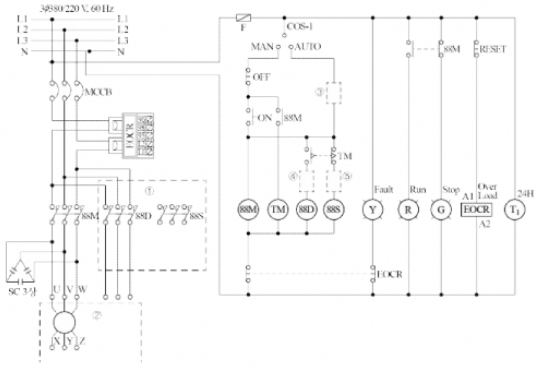
위의 결선도의 ①, ② 부분의 누락된 회로를 직접 완성하시오.
위의 결선도의 ③, ④, ⑤ 부분의 미완성 부분의 접점을 그리고 그 접점 기호를 표기하시오.
정답
정답
정답 | 시간 | ON | OFF | 88M | 88S | 88D | Run | |—|—|—|—|—|—|—| | t_1 | □ | | | | | | | t_2 | | □ | | | | | | t_3 | | □ | | | | | | t_4 | | □ | | | | | | t_5 | □ | | | | | |
(□는 해당 시간대의 신호 상태를 나타내는 기호입니다. 실제 그림을 참고하여 채워넣어야 합니다.)
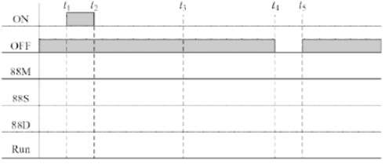
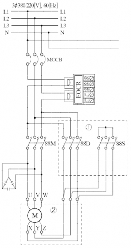
③
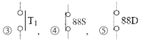
한시동작 순시복귀 a접점
Time chart 완성
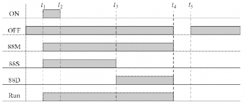
| 점수 | 세부기준 |
|---|---|
| 7점 | (1)~(4)이 모두 맞은 경우 7점 획득 |
| 2점 | (1) 결선도를 전부 맞게 그린 경우 2점 획득 |
| 2점 | (2)번이 모두 맞은 경우 2점, 1~2개가 맞은 경우 1점 획득 |
| 1점 | (3)번이 맞은 경우 1점 획득 |
| 2점 | (4)번이 맞은 경우 2점 획득 |
① 오른쪽 제어회로에서 PB1을 누를 경우 동작하는 MC는 88M과 88S로 88M은 콘덴서가 연결되어 있으므로 88S가 Y결선측(기동)이며, 타이머 시간이 경과 후 동작하는 MC는 88D로 Δ결선측(운전)이다. (주회로)
② 제어회로 쪽에서 자동(Auto) 모드로 동작하기 위해서는 타이머 T1의 a 접점을 사용해야 하고, 88S와 88D는 동시에 동작하면 상간단락이 일어나므로 인터록(Inter-lock)회로로 구성하기 위해 상대방의 전원 앞에 자신의 b접점을 연결한다.